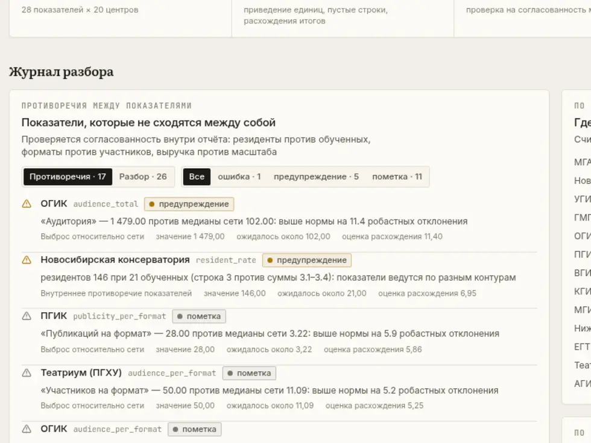
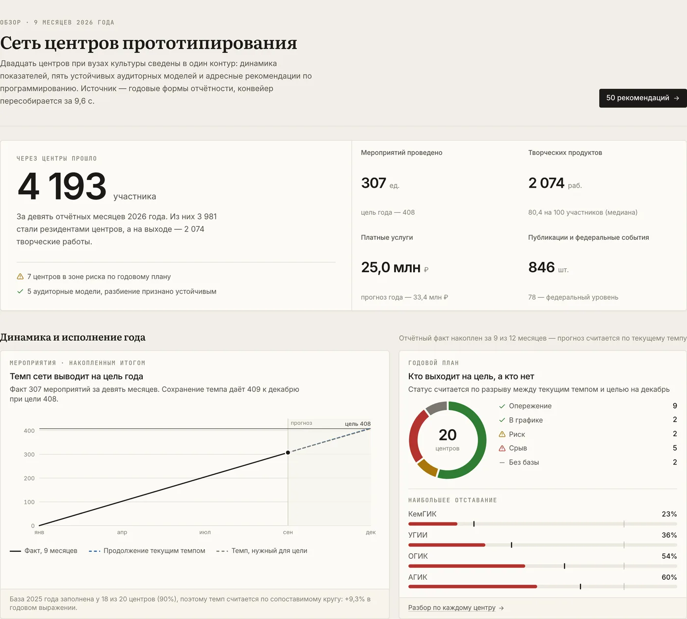
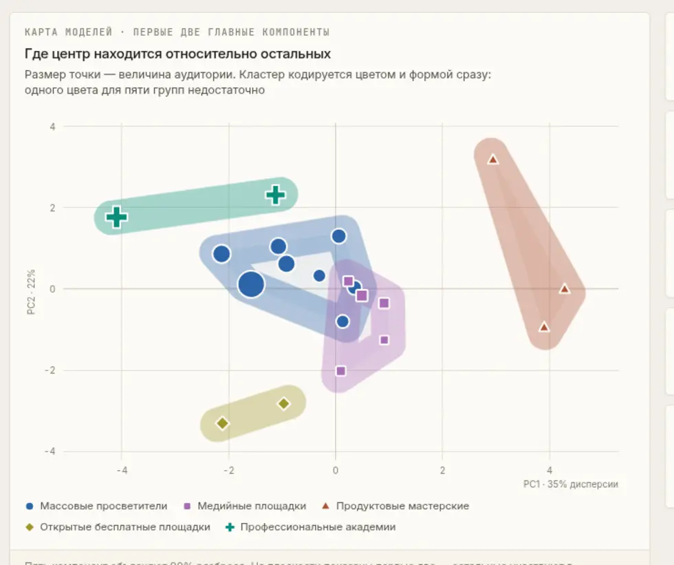
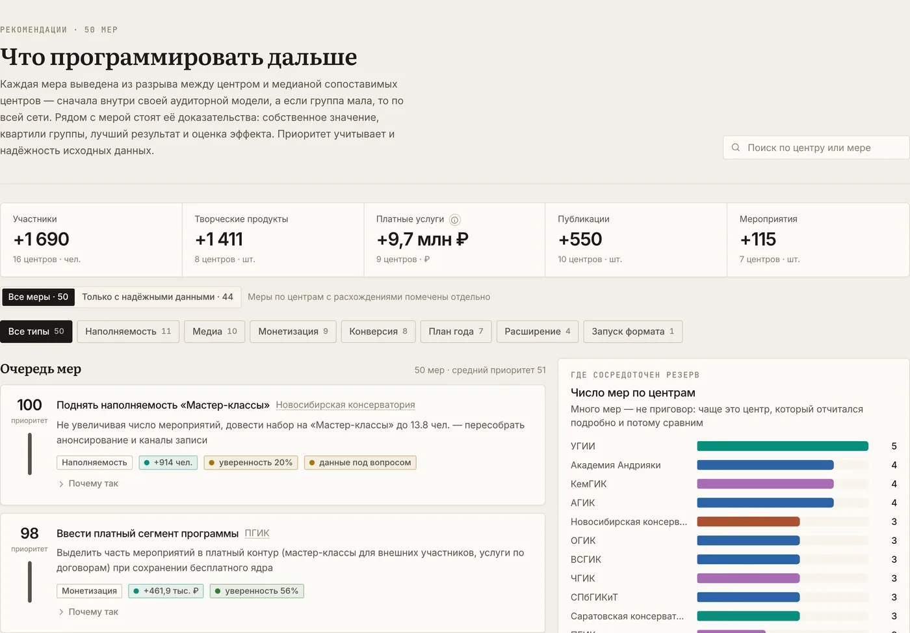
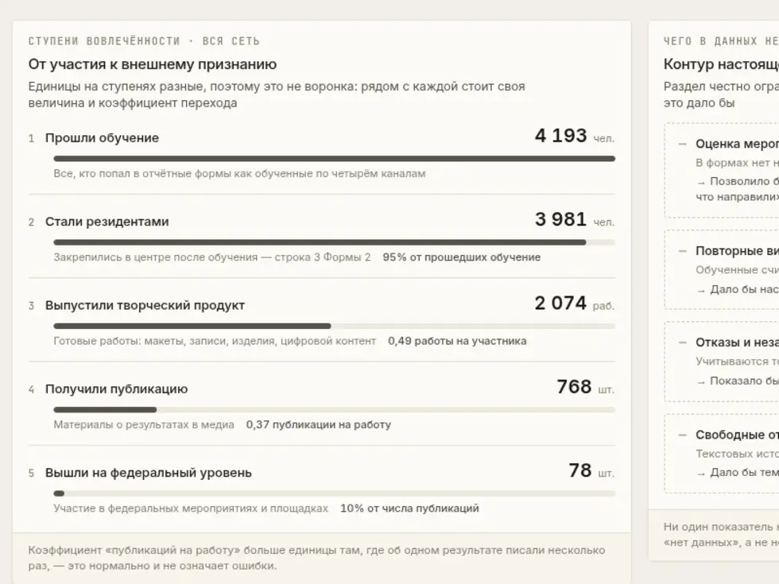
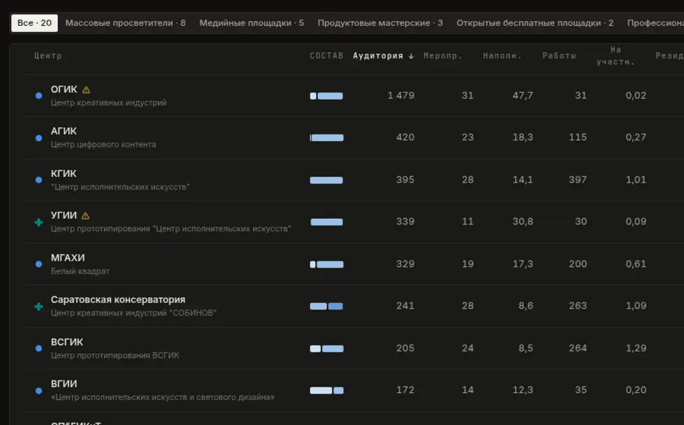

Аналитическая платформа сети центров прототипирования и творческих инкубаторов при вузах культуры: динамика показателей, кластеризация аудиторных моделей и адресные рекомендации по программированию.
Каждый центр заполняет формы по-своему: где-то тысячи рублей подписаны рублями, где-то итог не сходится с подпунктами. Свести их вручную — работа на неделю.
Консерватория и центр цифрового контента работают с разной аудиторией. Сравнение «всех со всеми» даёт рейтинг, а не управленческий вывод.
К декабрю выясняется, что часть центров не вышла на план. В сентябре это уже видно в цифрах — но никто их не сводит.
Мы сделали платформу, которая превращает эту отчётность в конкретные управленческие действия. Она развёрнута, работает и открыта по ссылке.


Семь разделов: обзор, динамика, вовлечённость, кластеры, организации, рекомендации, качество данных.
Персональных данных посетителей в отчётности нет и быть не должно. Зато у каждого центра есть профиль аудитории — и его можно кластеризовать.
Доли четырёх каналов обучения
Размер аудитории и линейки форматов
Наполняемость и доля резидентов
Продукты, выручка, публичность
Доли каналов — композиционные данные: они лежат на симплексе, сумма всегда равна единице. Признаки линейно зависимы, и обычная стандартизация для них некорректна — евклидово расстояние искажает близость.
Применено центрированное логарифмическое преобразование с мультипликативной заменой нулей — стандартная практика для составов.

Массовый охват, широкая линейка форматов, тихая работа
Заметность в медиа при камерном формате
Сильное ядро резидентов, высокая отдача в продуктах
Бесплатная модель, крупные потоки, узкая линейка
Ставка на повышение квалификации и мастер-классы
Признаки перемешиваются внутри столбцов, кластеризация повторяется — так получается, какой силуэт даёт чистый шум.
Каждый центр по очереди убирается, модель пересобирается, результат сравнивается по индексу Рэнда.
Разные семейства сходятся на близком разбиении — значит, дело в данных, а не в выбранном методе.
Число кластеров тоже не назначено рукой: перебор k от 2 до 5 по четырём метрикам сразу — силуэт, стабильность на бутстрапе, баланс размеров и индекс Дэвиса—Болдина. Сводный балл у k = 5 — 0,976 против 0,592 у ближайшего.
На «Мастер-классы» приходит 0,3 чел. на мероприятие при медиане 13,8 в своей модели — это нижний квартиль. Мероприятия уже проводятся (68 шт.), значит резерв закрывается работой с набором, а не новой программой.

Это разрыв между центром и медианой сопоставимых центров — при неизменном числе мероприятий и неизменном бюджете. Не «дайте денег», а «используйте то, что уже проводится».
Показан подтверждённый резерв. Полный — 9,67 млн ₽ выручки и 1 690 участников; из него вычтены шесть мер по четырём центрам, у которых показатели внутри отчёта противоречат друг другу. Мы сами уменьшили свою цифру, а не защищаем максимальную.
В задании была обратная связь. В датасете её нет — ни одной строки об удовлетворённости, ни одного отзыва. Синтетический NPS генерируется за час, но дашборд, где половина метрик придумана, не годится для решений.

Устойчивый разбор 20 разнородных книг Excel, приведение единиц, журнал каждой правки
CLR-признаки, PCA, k-средние / Уорд / GMM, перестановочный тест, leave-one-out
FastAPI, 14 эндпоинтов, результат конвейера держится в памяти процесса
React 19 + TypeScript, графики собственные на SVG, палитра проверена машинно
Мы начали с того, что отчётность собирают, а решений по ней не принимают. Вот пятьдесят решений — с обоснованием, оценкой эффекта и честной пометкой там, где данным нельзя доверять.
